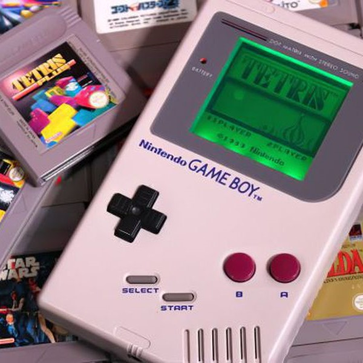

La eclosión de los videojuegos
Un hito importante en el inicio de los videojuegos tuvo lugar en 1971 cuando Nolan Bushnell comenzó a comercializar Computer Space, una versión de Space War, aunque otra versión recreativa de Space War como fue Galaxy War puede que se le adelantara a principios de los 70 en el campus de la universidad de Standford.
La ascensión de los videojuegos llegó con la máquina recreativa Pong que es considerada la versión comercial del juego Tennis for Two de Higginbotham. El sistema fue diseñado por Al Alcom para Nolan Bushnell en la recién fundada Atari.
El juego se presentó en 1972 y fue la piedra angular del videojuego como industria. Durante los años siguientes se implantaron numerosos avances técnicos en los videojuegos (destacando los microprocesadores y los chips de memoria). Aparecieron en los salones recreativos juegos como Space Invaders (Taito) o Asteroids (Atari).
